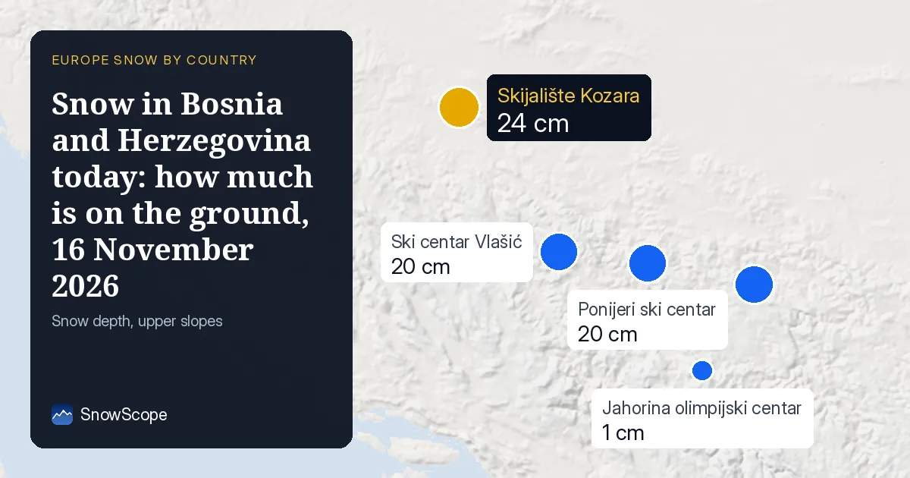

Thaw in Bosnia and Herzegovina: 600 km² of snow cover gone in a day
Yesterday about 1,090 km² was white in Bosnia and Herzegovina; today 490 km² is left, 600 km² less in one day.
See the live snow forecast for Skijalište Kozara in the SnowScope appSnow depth, powder alerts and the 3D map, free.
A mild day eats the snow
Mild air hits the thin snow of the valleys first. Expect wet, heavy snow low down in the afternoon and firm, icy patches the next morning.
Snow covers roughly 490 km² in Bosnia and Herzegovina on 16 November, 600 km² less than yesterday. Roughly 2 % of the country's mapped mountains and hills are covered.
| Resort | Snow depth | New snow, 72 h | Coming, next days | Top |
|---|---|---|---|---|
| Skijalište Kozara | 24 cm | 0 cm | 0 cm | 809 m |
| Igrišta olimpijski centar | 20 cm | 1 cm | 0 cm | 1,346 m |
| Ponijeri ski centar | 20 cm | 1 cm | 0 cm | 1,217 m |
| Ski centar Vlašić | 20 cm | 1 cm | 0 cm | 1,524 m |
| Jahorina olimpijski centar | 1 cm | 2 cm | 0 cm | 1,886 m |

How deep it is, height by height
Height makes the difference: between 500 and 1,000 m, under 1 cm on average, 2 % covered; between 1,000 and 1,500 m, under 1 cm on average, 2 % covered; between 1,500 and 2,000 m, under 1 cm on average, 3 % covered.
The resorts with the most snow
Skijalište Kozara leads with 24 cm on its upper slopes.
Then come Igrišta olimpijski centar (20 cm), Ponijeri ski centar (20 cm), Ski centar Vlašić (20 cm) and Jahorina olimpijski centar (1 cm).
Igrišta olimpijski centar picked up 1 cm in the last three days and could add 0 cm by Thursday 19 November.
Snow lies on the upper slopes of 6 out of 12 resorts in Bosnia and Herzegovina.
The rest of the shortlist: Ponijeri ski centar: 20 cm on top, 1 cm in three days, 0 cm expected; Ski centar Vlašić: 20 cm on top, 1 cm in three days, 0 cm expected; Jahorina olimpijski centar: 1 cm on top, 2 cm in three days, 0 cm expected.
Snow on the way?
Expect up to 0 cm on the snowiest slopes by the third day; the seven-day total reaches 15 cm.
Monday 23 November stands out, with up to 11 cm in a day.
The second week adds up to 16 cm where it snows most.
Skiing conditions
The snow is retreating uphill, so plan on the higher lifts and avoid the low valley runs.
With more snow in the forecast, the next days should improve things further.
Today's snow cover
Below about 2,000 m the slopes are mostly green or brown. Last week's 200 km² has grown by 290 km².
The latest snowfall
Bjelašnica and Jahorina got the most fresh snow over three days, up to 3 cm.
The neighbours today
For comparison, the neighbours on the same day: Croatia: 10 % white, deepest Rudnik Tršće with 17 cm, up to 9 cm in the week ahead; Serbia: 0 % white, deepest Avantura park with 28 cm, up to 8 cm in the week ahead.
Tips for skiers
- Roads to the higher resorts may need winter tyres or chains.
- Check the resort's own lift status before you travel.
- Fresh snow on a cold base sticks badly: take care on steep slopes.
About these numbers
Resort snow depths are the deepest snow on the resort's upper slopes on the date shown; they are estimates for an area, not a measurement at one point. Forecasts can change. Always read the official avalanche bulletin before going off-piste.
Cite this report
For research, teaching or the press: the numbers and charts are free to reuse under CC BY 4.0 with this citation.
SnowScope (2026), Thaw in Bosnia and Herzegovina: 600 km² of snow cover gone in a day, https://snowscope.app/blog/en/2026/11/bosnia-and-herzegovina-snow-report-16-november-2026.html, accessed 2026-11-16
SnowScope (Atlas Labs). (2026, November 16). Thaw in Bosnia and Herzegovina: 600 km² of snow cover gone in a day. SnowScope snow reports. https://snowscope.app/blog/en/2026/11/bosnia-and-herzegovina-snow-report-16-november-2026.html
BibTeX
@misc{snowscope2026bosniaandherzegovinasnow,
author = {{SnowScope (Atlas Labs)}},
title = {Thaw in Bosnia and Herzegovina: 600 km² of snow cover gone in a day},
year = {2026},
month = nov,
howpublished = {\url{https://snowscope.app/blog/en/2026/11/bosnia-and-herzegovina-snow-report-16-november-2026.html}},
note = {Published 2026-11-16 20:42 UTC; accessed 2026-11-16}
}· CC BY 4.0 · Methods, data and tools →
Skijalište Kozara: snow and temperature by height, this winter vs last (tools) →
Follow Skijalište Kozara
Free: a message when fresh snow is coming, and the forecast every morning.
More snow reports

Himalaya snow cover in November 2026 from NASA MODIS: snow on 610,409 km² of ground above 2,000 m between the Hindu Kush and Bhutan, half the clear ground white from about 4,800 m in Nepal and 3,600 m in the Karakoram. The NDSI explained, plus shadows, cloud and the low autumn sun.

SnowScope's peak finder is a free peak finder app: point your phone at the mountains and it names the summits, with height, distance and climb time. Our tests: 98 % of the summits it lists are really in sight, and on real photos it corrected compass errors of up to 105° to 0.15°. Free with 3 names, every peak for $0.99 once.

Up to 30 cm of snow fell on northern Velebit and Bjelolasica on Friday 13 November 2026. By Tuesday it was gone. Day by day, what the mountains kept, and when snow comes back.